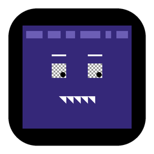

Commodore 64
Press Start, then type on the C64 or press F1 to talk.
KBDF1 MICF3 MUSIC
speaking
Conversation
Nothing said yet.

Chat Buddy makes the C64 talking face chat through ChatGPT on your Ultimate 64 or C64 Ultimate. Three steps (and an optional fourth) and you're talking.
Its IP address: on the Ultimate, press F2 (or the menu button) and look under Network.
ChatGPT answers through your own OpenAI account. Make a key at platform.openai.com/api-keys and paste it here. It's kept in your computer's keychain, not in a file.
Turn this off if the face is already running.
Only needed if the live view can't get a picture (it needs wired Ethernet) and you'd like the screen drawn from the C64's memory instead. It's Commodore's, so it can't come with the app, but it's in VICE: install VICE and press Find.
Connects this C64 to Lexi's commodore 64 personality through her database. Needs the character ROM (step 4).
Nothing said yet.